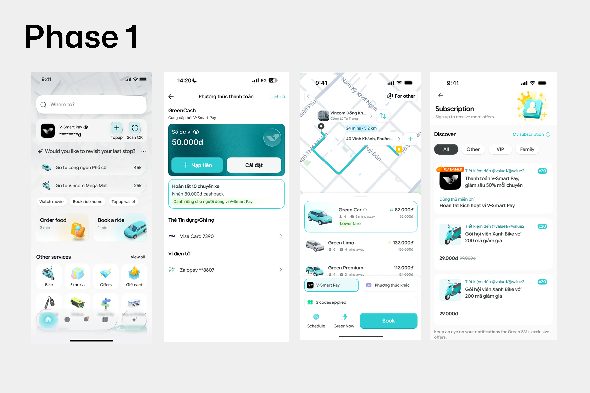
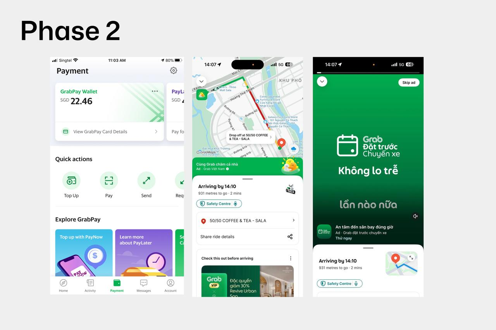

Market standard, lens shift, and CJM blockers.
Các platform lớn — Uber, Lyft, Grab, Gojek, DiDi, Kakao T, Careem — đều đi theo cùng một logic:
Payment không phải điểm bắt đầu. Payment là layer làm cho hành vi chính mượt hơn.
User không mở GreenSM để "mở ví". Họ mở app vì một job rất rõ: đi xe, đặt đồ ăn, di chuyển, giao nhận.
Vai trò đúng của VSP là làm cho payment nhanh hơn, tin cậy hơn, ít phải nghĩ hơn.
Thứ tự ưu tiên on-demand (Grab 2025 benchmark):
Mục tiêu: setup một lần duy nhất, các lần thanh toán sau gần như không tốn thao tác.
Cụ thể:
Không ai build payment trust từ con số 0. Các platform thắng đều mượn trust từ một ecosystem hoặc payment habit đã tồn tại.
Layer fintech phải phục vụ thanh toán food / ride dễ dàng trước — rồi mới được phép bán các service khác (loan, insurance, saving, investment).
Grab, Gojek, Careem đều theo thứ tự đó: daily behavior → payment habit → financial services.
"Build ví VSP SDK trên GreenSM?"
"Làm sao giúp 1.5M user GreenSM thanh toán tiện hơn, smart hơn — và từ đó hình thành thói quen dùng VSP?"
GreenSM hiện có 1.5M DAU và ~90% retention. Đây không chỉ là một integration project. Đây là một acquisition channel đã có sẵn trust, frequency, và real payment moment.
Acquire trước — Monetize sau. Đúng thứ tự, đúng thời điểm.
Phase 1 phải thắng bằng payment utility + GreenSM trust + reward đúng context. Phase 2 mở ra khi user đã quen.


Hiện tại VSP chưa đủ lựa chọn nguồn tiền, và chưa có cơ chế thanh toán tự động. Nếu user không thấy phương thức quen dùng, họ drop ngay tại bước setup.
Tối thiểu cần có:
Cần đưa eKYC về hướng smart hơn: